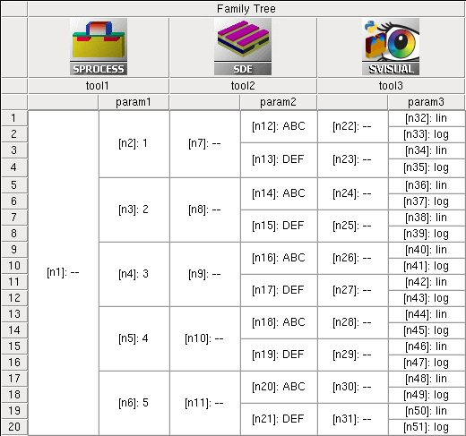
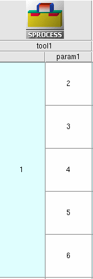
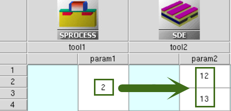
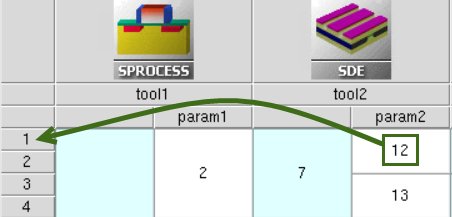
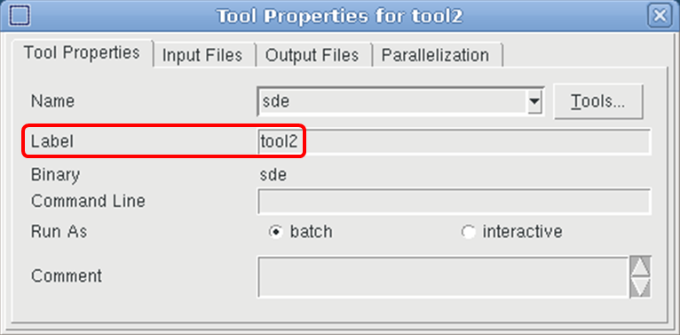
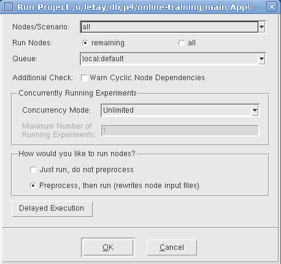

9.1 Tree Navigation Concept
9.2 Node Navigation
9.3 Reserved Keywords
9.4 Execution Dependencies
9.5 The "/i" and "/o" Reference Options
The common strategy for data exchange between different tools in a Sentaurus Workbench project uses the concept of tree navigation, which is based on the fact that each node in a simulation tree has a unique number. When manipulating tool inputs, you can enter preprocessing commands (for example, #if and #include) and special @...@ constructions, which are evaluated and substituted during a project preprocess.
To show node numbers:
Press the F9 key to show both the node number and the parameter value in the same cell (see Figure 1).

Figure 1. Project tree representation in GUI of Sentaurus Workbench.
A complete Sentaurus Workbench project, showing the standard node navigation and parameter operations, is located in the directory Applications_Library/GettingStarted/swb/node_preprocess.
Load the project into Sentaurus Workbench and preprocess it (press Ctrl+P). Then, look at each particular node input (pp*.cmd) to see how the preprocessor interprets the commands.
The node number for each particular tool in a project can be accessed using the @node@ specification in a tool command file. For example, for the project in Figure 1, the following entries have been put into the first tool input (tool1):
| Node specification | Tool instance |
|---|---|
@node@ @node:2@ @node:first@ @node:last@ @node:+2@ #if "@node@" == "@node:last@" # last node, no next experiment exists. # do not execute this node #noexec #else @node:+1@ #endif @node:index@ @node:max@ @node|1@ @node|+1@ @node|tool1@ @node|tool2@ @node:all@ @node|tool1:all@ @node|1:all@ @node|tool2:all@ @[lsort -unique "@node|1:all@" ]@ |
 |
Click to view the command file tool1_fps.cmd.
Table 1 illustrates how Sentaurus Workbench interprets these entries during the project preprocess for node number 2. The Description column assumes a horizontal project orientation. For a vertical project orientation, the definitions of the words right and below, and horizontal and vertical in the description should be exchanged.
| Command entry | Result after preprocessing | Description |
|---|---|---|
| @node@ | 2 | Returns the current node number. |
| @node:2@ | 3 | Returns the second node from top in the current column. Here, a colon (:) is the operator used to navigate between different experiments within the same columns. |
| @node:first@ | 2 | Returns the number of the first node in the column. |
| @node:last@ | 6 | Returns the number of the last node in the column. |
| @node:+2@ | 4 | Returns the node number, that is two positions below the current node. If a node does not exist in that relative position, then the last existing node in this direction is returned. |
#if @node@ == @node:last@ #noexec #else @node:+1@ #endif |
For node=2: 3 For last node=6: node is not executed |
Relative references such as @node:-1@, and @node|+1@ must
be used with care, since they might refer to nonexistent node numbers. To avoid
such problems, it is recommended that you check using the #if
command. In the example, for the last node in the column, the reference to the node below does not exist. Thus, Sentaurus Workbench is instructed not to execute the node - node status will stay "white". Note, however, that subsequent tools are still being executed. If you want to avoid the execution of subsequent nodes, just prune the node, see Section 4.4 Pruning Project Trees. |
| @node:index@ | 1 | Returns the index of the current node in its column starting from 1. |
| @node:max@ | 5 | Returns the index of the last node in the column, which is equivalent to the number of splits on the current tool level in the project tree. |
| @node|1@ or @node|+1@ |
12 13 | Returns node numbers for the next subsequent
tool in the project that are in the same branch of the simulation
tree. Here, a vertical bar (|) is the operator to navigate horizontally between different tool nodes in the project.  When navigating, only real nodes are counted. Virtual nodes (light-blue colored) are ignored. |
| @node|tool1@ | 2 | Returns the node number for the "tool1" tool name in the current branch of the simulation tree. Using the tool name for node navigation sometimes is more convenient, because you do not need to consider at which project tree level a node is located, but can directly access its number using a tool name. |
| @node|tool2@ | 12 13 | Returns the node numbers for the "tool2" tool name in the current branch of the simulation tree. This command is equivalent to @node|+1@. |
| @node:all@ | 2 3 4 5 6 | Returns the list of node numbers in the current project level. |
| @node|tool1:all@ | 2 3 4 5 6 | Returns the list of node numbers for the "tool1" tool name in the simulation tree. This command is equivalent to @node:all@. |
| @node|+1:all@ or @node|tool2:all@ |
12 13 14 15 16 17 18 19 20 21 12 13 14 15 16 17 18 19 20 21 | Returns a list of all node numbers for the next subsequent tool in the project. Numbers in the list are repeated according to a number of splits on the next tool level (in this case, two repetitions of the number set are produced). |
| @[lsort -unique "@node|+1:all@" ]@ | 12 13 14 15 16 17 18 19 20 21 | To produce the unique node number list without repetitions of the previous
@...:all@ expressions. The @[...]@ construction instructs Sentaurus Workbench that there are Tcl commands inside, which must be evaluated during node preprocessing. |
There are other @...@ reserved keywords in Sentaurus Workbench, which can be useful for tree navigation and data analysis. The most frequently used keywords are collected in the second SDE tool input (tool2) of the project shown in Figure 1.
Click to view the command file tool2_dvs.cmd.
| Keyword | Description |
|---|---|
| @previous@ | Returns the node number of the previous node in the tree branch.
Used to create node execution dependency
(see Section 9.4 Execution Dependencies). It cannot be used in the first tool input in the flow, for which a previous node does not exist. |
| @experiment@ | Returns the experiment number to which a node belongs.
 |
| @experiments@ | Returns all the experiments to which a node belongs as a list. |
| @tool_label@ | The label of a tool instance in the simulation flow.  |
| @pwd@ | Returns an absolute path to the project depository. |
| @pwdout@ | Returns an absolute path to the project depository in hierarchical project organization. Takes into account the possibility of remote data location outside of the project directory. |
| @nodedir@ | Returns the path to the corresponding node folder for hierarchical project organization, relative to @pwdout@. |
| @tdrboundary@ | Returns the full name of the device structure boundary file, which is supposed to be loaded or saved in the current node. This command assumes that a boundary is created by either Sentaurus Process or Sentaurus Structure Editor, and it automatically substitutes the keyword with a proper file name. If specified in other tool inputs, this specification will generate a preprocessor error. |
| @tdr@ | Returns the grid file name, given in TDR data format, which appears to be a result of the preceding process simulation or meshing step. Sentaurus Workbench automatically assigns a name according to the provided tool sequence in the project. |
| @commands@ | Returns the tool preprocessed file name ready for execution. |
| Keyword | Description |
|---|---|
| @tdrdat@ | Returns a file name using the n<current_node_number>_des.tdr format, which is suitable for the Plot file specification in the File section of the Sentaurus Device command file. Therefore, it is usually used as a parameter of the Plot statement: Plot="@tdrdat@". |
| @plot@ | Returns a file name using the n<current_node_number>_des.plt format, which is suitable for the Current specification in the File section of the Sentaurus Device command file. It is used as a parameter of the Current statement, Current="@plot@", which refers to the results of the electrothermal device simulation, such as currents, voltages, time, temperature, and charges. |
| @log@ | Returns a file name using the n<current_node_number>_des.log format, which is suitable for the Output specification in the File section of the Sentaurus Device command file. Therefore, it is usually used as a parameter of the Output statement: Output="@log@". |
| @acplot@ | Returns a file name using the n<current_node_number>_ac_des.plt format. It is used as a parameter of the ACExtract statement in the File section of the Sentaurus Device command file, ACExtract="@acplot@", which refers to the results of small-signal AC analysis. |
| @parameter@ | Returns a file name using the n<current_node_number>_des.par format. It is used as a parameter of the Parameter statement in the File section of the Sentaurus Device command file, Parameter="@parameter@", which refers to the input parameter file, containing material properties and the kinetic model coefficients. |
When running a project, the node execution order is defined by node dependencies. Sentaurus Workbench immediately submits all nodes that are ready for execution, assuming that all their prerequisite nodes have been executed already.
To have a node execution dependent on the successful completion of the previous node or nodes in the project tree, the special preprocess command #setdep can be used in the following form:
#setdep <list_of_nodes>
Having found such a command, the preprocessor ensures that a current node is not executed before all nodes in the list have the status "done".
| Command | Result |
|---|---|
| #setdep @node|-1@ | Sets the dependency on a previous node in the project tree branch. |
| #setdep @node|-1:all@ | Requests the node execution only when all nodes in the previous node column are finished. |
| @previous@ | Specifying @previous@ in the input automatically triggers a corresponding node dependency. |
To unset node dependency, use the #remdep command.
When a project remains in Editable mode (see Section 7.4 Runtime Editing Mode), selecting the Preprocess, then run option for nodes in the Run Project dialog box does not generate a node dependency. To activate node dependency, a project or node must be preprocessed explicitly by choosing Nodes > Preprocess or by pressing Ctrl+P.
In some cases, you might want to change this predefined project execution order. Sentaurus Workbench allows you to do this by setting a concurrency mode for experiments in the Run Project dialog box:

Figure 5. Run Project dialog box with Limited selected as the concurrency mode.
To make the limited concurrency mode the default:
If you switch on the Run Limits option, then it deactivates the concurrency mode and activates the run limits specified by users inside a dedicated runlimits.xml file. For details about the Run Limits option, see the Sentaurus™ Workbench User Guide.
Each @...@ reference in Sentaurus Workbench can have an option, specifying whether the reference addresses the input or output interface of a tool.
The possible flags (options) are:
If no option is specified, then the Sentaurus Workbench preprocessor assumes the input file ("/i" option), which works seamlessly for most tools. The only exception is Sentaurus Structure Editor, for which you might want either to load input from the previous tool (for example, Sentaurus Process) or to create input for the subsequent tool (for example, Sentaurus Mesh). This is where the "/i" and "/o" options are helpful.
For example, the following commands in the file tool2_dvs.cmd:
@tdrboundary/i@ @tdrboundary/o@
will be interpreted by the Sentaurus Workbench preprocessor for node 12 as:
n2_bnd.tdr n12_bnd.tdr
Copyright © 2022 Synopsys, Inc. All rights reserved.
{kind=link}